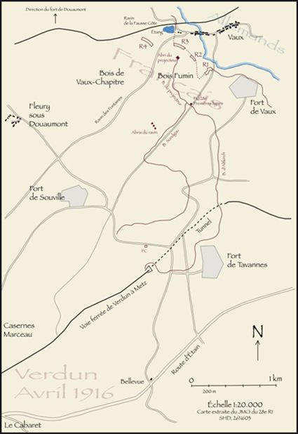
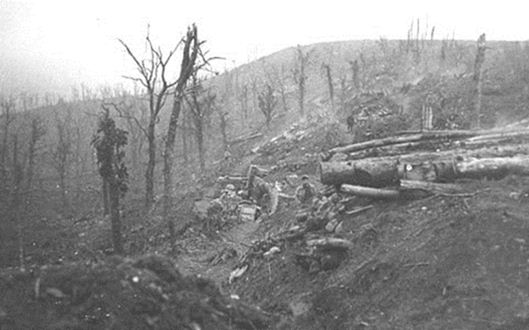
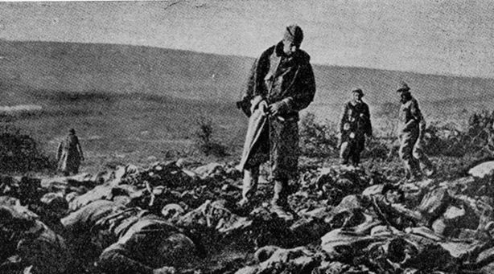
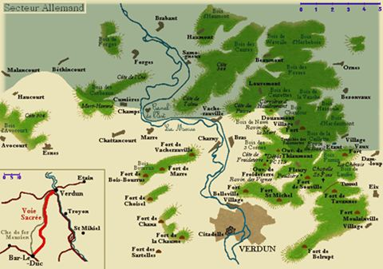
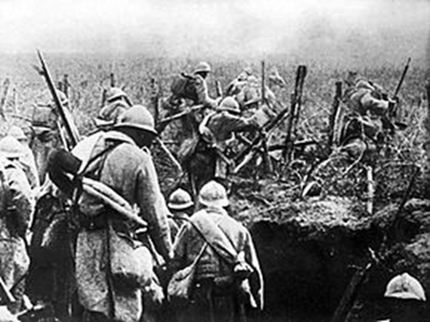
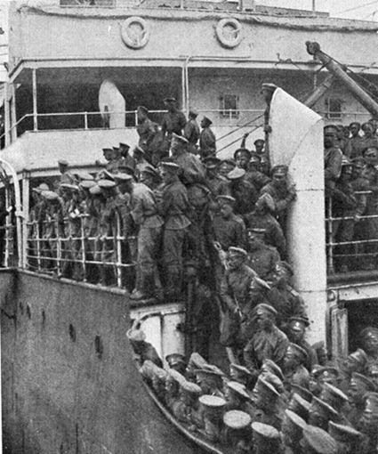
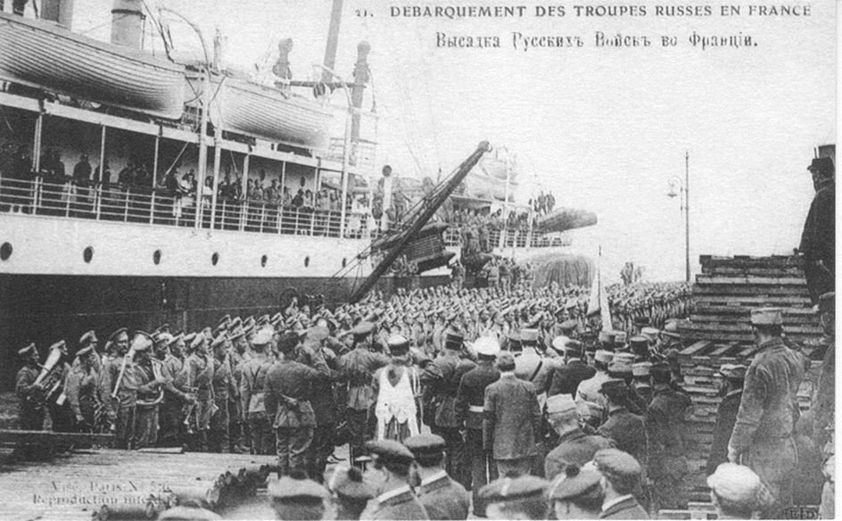
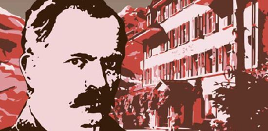

Le mois de mars 1916 débute en ce 609ème jour de guerre et la solidité du front au nord de Verdun, depuis si longtemps balayé par la rafale, n'a pas diminué.
Du lundi 3 avril 1916 au dimanche 9 avril 1916
Sur les fronts Belge et Français
Les Allemands font des préparatifs en vue d'une forte attaque sur le front belge : des canons de campagne sont envoyés d'Ostende et des défenses, tout le long de la côte, sont fortement renforcées; le nombre des hôpitaux préparés est triplé.
Les Anglais sont en action incessante de Dixmude à la Somme : les opérations autour de Saint-Eloi deviennent nombreuses. Depuis deux mois, l'ennemi dispute, aux troupes britanniques, ce point situé à une lieue d'Ypres et à un kilomètre au sud du canal : deux routes y bifurquent, l'une vers Warneton, l'autre par Messine vers Armentières. Les Anglais ont dû évacuer une partie du saillant de Saint-Eloi.
Dans la région de Douaumont-Vauxi-Damloup, les Allemands sont en léger recul.
La côte du Poivre oppose à l'ennemi une barrière infranchissable, et le bois de la Caillette, au sud-ouest de Douaumont, est actuellement repris aux Allemands. Près de Malancourt, l'ennemi a occupé un hameau sans importance stratégique. Dans la semaine qui vient de s'écouler, les Allemands n'ont donc fait aucun progrès : malgré le discours retentissant du chancelier Bethmann-Hollweg, la population n'est plus dupe des affirmations mensongères du gouvernement de Berlin.
Sur le front russe
En Russie, dans les régions plates et humides du Nord, le dégel empêche toute action d'infanterie: aussi les communiqués ne signalent que des tirs d'artillerie ou de mousqueterie et quelques explosions de mines.
En Galicie, dans la région de la Strypa moyenne, les Autrichiens essaient de lancer une forte offensive contre les positions russes; mais, soit préparation d'artillerie insuffisante, soit que le moral des colonnes d'assaut ne se trouve pas à la hauteur de la tâche, l'ennemi n'aborde pas la ligne russe.
Les troupes russes sont près de la ville de Surmeneh, à 25 kilomètres de Trébizonde.
Du lundi 10 avril 1916 au dimanche 16 avril 1916
Sur les fronts Belge et Français
Dans les lignes anglaises, la lutte a été presque entièrement restreinte cette semaine à des combats d'artillerie et à des opérations de mines : dans les combats d'infanterie, nos Alliés ont réussi à reprendre, autour de Saint-Eloi trois des cinq cratères de mines qu'avaient occupées les Allemands. Mais le résultat principal de leur action est de ne pas permettre à l'état-major ennemi de distraire de troupes, sur ce front, pour les porter sur Verdun. Nous participons, du reste, à cette action par l'appui de notre artillerie lourde, dirigeant son feu au nord-est d'Ypres sur les positions allemandes de Langemark.
En Champagne, nous avons pu croire, un moment, à une offensive, entre Souain et Sommepy, à la suite d'un violent bombardement provenant des lignes allemandes : notre répliqué semble avoir changé les dispositions de nos adversaires.
Les Allemands continuent leur grande offensive sur le front de Verdun. Grâce aux contre-attaques françaises au « Réduit d'Avocourt », à la Caillette, à Vaux, les Français reprennent les positions perdues la semaine précédente. Le gros effort des forces allemandes a été dirigé sur le point du Mort-Homme, avec tentative d'enveloppement par l'est, vers Cumières ; il a échoué, sauf sur un point où il a pu prendre pied dans quelques petits éléments de tranchées. Comme conclusion des opérations de cette semaine, donnons l'aveu découragé, échappé jeudi au journal le « Deutsche Tageszeitung : « L'avance sur Verdun s'effectue beaucoup trop lentement, et ceux qui sont en arrière du front mettent un jugement sceptique quant à l'issue de l'attaque. »

Bataille de Mort-Homme, le 14 avril 1916
Le Président de la République, accompagné de M. Léon Bourgeois, est allé voir les différentes lignes de la région fortifiée de Belfort.
Recevant les parlementaires français à Londres, M. Asquith, premier ministre, a répondu au discours du chancelier allemand sur les conditions de la paix future : les Alliés veulent le respect des nationalités, mais la destruction de la domination militaire de la Prusse.
Sur le front russe
Dans la région de Dvinsk, les communiqués russes ne signalent guère que des actions d'artillerie: la débâcle des glaces est loin d'être achevée.
Rien d'important ne s'est produit en Bessarabie : la situation est stationnaire devant Czernovitz.
Au Caucase, nos Alliés signalent de nouveaux progrès sur le territoire situé à l’ouest d'Erzeroum : cependant les Turcs semblent avoir porté des renforts dans celte région.
Rien d'important à signaler autour de Trébizonde.
Du lundi 17 avril 1916 au dimanche 23 avril 1916
Sur les fronts Belge et Français
L'armée anglaise retient avec succès les renforts que l'armée allemande voulait envoyer sur Verdun : actuellement les armées britanniques ont la garde du front de la mer à la Somme; en face d'elles, on peut compter 40 divisions allemandes, soit environ 500 000 combattants.
Quelques symptômes d'offensive, dans la région d'Ypres, sont à signaler. De même, en Picardie, près d'Albert, les Allemands ont tenté d'atteindre les tranchées des Alliés : partout les contre-attaques britanniques les ont repoussés.
Sur le front français, dans la région de Verdun, au sud de Douaumont comme aux Eparges et au flanc nord du Mort-Homme, les Français obtiennent des avantages.
Trois affaires importantes ont dominé autour de Verdun : l'attaque des Eparges, violente offensive du Kronprinz, est repoussée; au nord-ouest de l'Etang-de-Vaux, prenant l'offensive, les forces alliées s’installent sur les positions allemandes; enfin une attaque ordonnée par le commandement allié au nord et dans le bas de la côte du Mort-Homme, où les Allemands avaient enlevé des éléments de tranchées tourne à l’avantage des Français.
L'événement dominant de la semaine est l'arrivée à Marseille de régiments russes : chacun s'est senti rempli d'espérance en lisant l'ordre du jour du généralissime saluant la venue de nos Alliés et s'inclinant devant les drapeaux de ces régiments « sur lesquels, dit-il, s'inscriront bientôt les noms de communes victoires ».
Sur le front russe
Les Russes conservent et consolident leurs positions dans la région du Niémen supérieur, près de Krevo et en Galicie dans le secteur de Strypa.
En Asie-Mineure, après la chute d'Erzeroum, l'état-major germano-turc jeta toutes ses troupes disponibles contre les armées du grand-duc Nicolas qui visait la conquête de Trébizonde clef de l'Arménie sur la mer Noire, centre de l'alimentation de toute l'Asie-Mineure. Les Russes ont pris, cette semaine, cette place forte de Trébizonde, à deux journées de Sébastopol, base navale excellente; mais les critiques militaires sérieux pensent qu'il ne faut rien exagérer, ni préjuger déjà la marche des Russes sur Constantinople.
Du lundi 24 avril 1916 au dimanche 30 avril 1916
Sur les fronts Belge et Français
Sur le front anglais, l'activité des canonnades ne semble pas se ralentir : les mêmes noms, Saint-Eloi, Ypres, Souchez, Neuve-Chapelle, Carency, reviennent dans presque tous les bulletins officiels.
En Picardie, une certaine recrudescence d'action est signalée dans la région de Santerre : c'est une offensive d'artillerie qui provient de l’initiative française en bombardant les positions allemandes de Chaulnes et celles de Puzeaux, sur la ligne de Tergnier.
En Champagne, dans cette région de Tahure et de Massiges, dont on a tant parlé déjà, les Français bombardent des dépôts de munitions et des parcs ennemis.
Dans la région de Verdun, l'ennemi, cette semaine, n'a engagé aucune action importante : il a dirigé sur les positions alliées entre Avocourt et la Meuse, des bombardements continus et violents ; face à eux les Français vont non seulement repousser l'ennemi, mais encore réaliser quelques gains : au nord du Mort-Homme, ils enlèvent une tranchée et dans la région de la Ville-aux-Bois ils récupèrent un petit bois. Le comte Andrassy, un des hommes d'Etat les plus considérables de l'Autriche-Hongrie, après un voyage au front allemand, écrit dans ses impressions cette phrase : « Il n'y a aucune chance pour l'armée allemande de s'emparer de Verdun.» Il ajoute cette note caractéristique : « Il me faut modifier mon opinion sur la valeur de l'armée allemande. »
De nouveaux contingents russes ont débarqué cette semaine à Marseille
Débarquement des troupes russes en France – avril 1916
Sur le front russe
En Europe, les combats continuent avec une certaine activité dans le nord, dans la région des lacs et à la tête du pont d'Uskul devant Dvinsk (Dunabourg). Le maréchal allemand Hindenbourg s'acharne en de nouvelles offensives, qui, jusqu'à présent, n'obtiennent aucun succès.
En Bessarabie, les Autrichiens, tout en luttant pied à pied, rendent du terrain.
Au Caucase, l'avance russe sur le littoral reprend nettement : les Turcs sont délogés d'une forte position sur la rive gauche de Kara-Déré, à 25 kilomètres de Trébizonde.
Plus haut, dans les montagnes, à l'ouest d'Erzeroum et au sud de Bitlis, les attaques turques sont partout repoussées, mais aucun événement important n'est à signaler.
 Conférence Socialiste de Kienthal - avril 1916A l’arrière se tient en Russie, durant toute cette semaine, la conférence socialiste pacifiste de Kienthal. Les participants dénoncent ce conflit qu'ils décrivent comme meurtrier, long et inutile. Selon eux, c'est le peuple qui se ruine et qui souffre en silence pour satisfaire les bourgeois capitalistes.
Le manifeste de la Conférence déclare d'ailleurs « Cette guerre, peuples travailleurs, n'est pas la vôtre, mais vous en êtes les victimes.»
Les coupables de ce désastre humain sont tout désignés : le délire nationaliste ainsi que la domination impérialiste des gouvernements bourgeois (qu'ils soient républicains ou monarchistes). De plus, les délégués de la Conférence citent les journaux « alimentés aux fonds secrets », les industriels « fournisseurs aux armées et profiteurs de guerre », les bourgeois et les réactionnaires « qui se réjouissent de voir tomber sur les champs de bataille ceux qui menaçaient hier leurs privilèges usurpés, c'est-à-dire les socialistes, et les ouvriers syndicalistes et les paysans », la diplomatie secrète et l’Eglise. Les participants désignent comme cause de la guerre le capitalisme .Les réunions fraternelles et internationales de Zimmerwald et de Kiental appellent à la paix immédiate et sans indemnités ni annexions, également appelée « Paix blanche ». De plus, une minorité emmenée par Lénine défend le programme de transformer la « guerre impérialiste » en « guerre révolutionnaire » et fonder une nouvelle Internationale.
Les socialistes appellent aussi à faire pression sur les gouvernements au moyen de grèves et de manifestations européennes. Ainsi, ils espèrent affaiblir les belligérants et faire arrêter la guerre. Les derniers mots du manifeste soulignent cette idée : « À bas la guerre ! Vive la paix ! La paix immédiate et sans annexions ! Vive le socialisme international ! »

Partager cette page